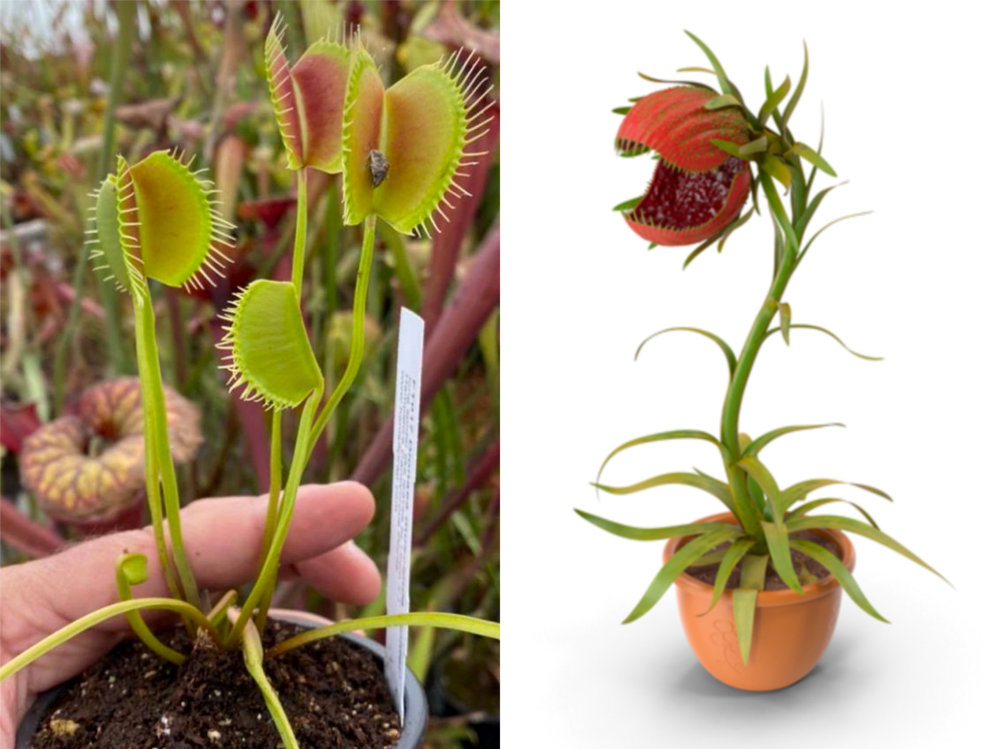

이 글을 읽기 시작한 당신은 각종 매체를 통해 인간을 잡아먹는 무시무시한 식물에 대한 이야기를 들어본 적이 있을 것이다. 그 시초를 정확히는 알 수 없지만, 1878년, 독일의 탐험가 칼 리치(Karl Liche)가 마다가스카르섬을 탐험하는 도중에 발견했다고 주장하는 식인식물에 대한 비교적 구체적이고 자세한 묘사가 기나긴 오해의 시발점으로 충분해보인다. 1951년, 영국의 공상소설작가 존 윈덤(John Wyndham)은 그의 작품 트리피드의 날(Day of the Triffids, 1951)에서 인간을 잡아먹는 육식식물을 묘사하여 큰 반향을 일으켰고, 1986년, 식인식물을 소재로 내건 뮤지컬 영화 리틀 숍 오브 호러(Little Shop of Horrors, 1960; 1986)는 리메이크영화와 뮤지컬까지 제작되는 등 큰 호응을 받았다.
이외에도 다양한 영화나 작품에 나오는 식인식물들은 대부분 날카로운 이빨과 거머리를 연상시키는 징그러운 혀를 가지고 있으며, 또한 엄청나게 거대하다. 하지만 이런 영화 속 식인식물들은 대중들의 인식 속에서 엄청난 오해를 불러일으켰다. 실제 이들의 모티브가 된 육식식물은 인간을 잡아먹을 수 없으며, 하물며 길을 지나다 우연히 마주치는 아주 작은 생쥐조차 잡아먹을 수 없다. 우리가 이 책을 통해서 앞으로 마주칠 것들이 바로 이런 무시무시한 오해의 그릇 속에 담긴 작고 지혜로운 식물들에 관한 이야기이다.
이 뻔해보이는 질문에 오랜기간 과학자들이 답을 미루고 허둥댔다는 것이 믿기는가? 마치 짐짝을 미처 다 옮기기도 전에 또 다른 물통을 짊어진 불쌍한 노새처럼, 1875년 다윈이 식충식물에 대한 몇가지 정의를 내린 이후론 거의 한 발짝도 진보가 없었던 것이 바로 식충식물에 대한 근본적인 정의이다. 물론 도처에 널려있는 각종 사전적인 내용을 요약해보면 그 정의는 아래와 같다.
식충식물(食蟲植物; Insectivorous Plant) : 벌레잡이식물이라 불리기도 하며, 변형된 잎을 이용해서 곤충을 포함한 소동물을 포획하고, 자체적인 방법을 이용해 포획한 동물에서 양분을 흡수할 수 있는 식물군을 총칭한다.
서양에서는 육식식물(Carnivorous Plant) 혹은 식충식물(Insectivorous Plant)로 불리는 식충식물군은 무려 5목 12과 19속 700여 종의 식물이 포진된 대규모 인위분류 집단이다. 그러나 과학이 발달함에 따라 소화효소가 없거나 포충기작이 명쾌하게 제시되지 못하는 것들이 발견되면서, 그 정의를 명확히 내리기 애매한 분류군들이 나타나기 시작했다.
이로 말미암아 우리가 이토록 허둥대는 것은 어찌보면 당연한 일이다. 마치 이 세상이 모두 제것인 양 자신들의 기준으로 분류하고 만족하는 분류학이라는 이데올로기적 행위의 모순점은 꽃의 피움을 구분하는 화서에서 가장 명확한 근원을 찾을 수 있다. 우리가 아직 전부 세보지도 못하였을 숱한 종류의 꽃들이 어떤 모양으로 피는지 하나 하나 이름을 붙이는 일을 하다보면, 속된말로 이골이 날 지경이다. 하지만 어쩌겠는가? 자신들의 만용으로 인류는 반세기만에 너무 많은 것을 잃었고, 종 보존을 체계적으로 만들어줄 분류학만이 인류의 마지막 지푸라기이니.......
분류학의 푸념은 이쯤으로 미뤄두고 본론으로 다시 돌아가보면, 우리는 이 책의 전반에서 맞이하게될 무척이나 곤란한 질문을 다시끔 떠올릴 수 밖에 없다. 동물을 고의적으로 잡으면 식충식물인가? 분해된 동물을 잎으로 흡수하면 식충식물인가? 그것도 아니면 우리가 보기에 잔인무도하고 볼썽사납다면 그게 육식식물인가? 이와같은 혼돈과 분란을 사전에 방지하기 위해 1875년, 찰스 다윈은 일찍이 식충식물군에 새로운 회원을 받게되었을 때 사용할 평가사항을 제정하였다.
"식충식물은 동물을 유인하고, 잡고, 죽일 수 있는 외형적 요건을 충족해야만 한다. 또한 반드시 포획한 먹이로부터 양분을 흡수할 수 있어야한다.; Carnivorous plant if it attracts, captures, and kills animal life forms. To qualify as a Carnivorous plant, it must also digest and absorb the nutrients from the prey."
- Insectivorous Plant, 1875, Darwin -
허나 이 정의가 훗날 더 큰 혼란을 초래할 줄 누가 알았으랴. 수 십 년의 연구 끝에, 학자들은 앞서 밝혔던 다소 충격적인 사실과 마주하게되었는데, 대중들에게 친숙하고 인기가 높은 많은 식충식물들이 다윈의 기준에서 낙제를 받을 위기에 처한 것이다. 그러므로, 이 책을 더욱 효과적으로 이해하기 위해서는 우선 식충식물이라는 것이 정확히 어떤 것인지를 알아봐야 할 것이다. 지금 이 부분을 읽고있는 독자의 생각은 어떠한가?
1875년 찰스 다윈이 최초로 벌레잡이식물을 정의내린 이래로 많은 논의가 이어져왔지만, 현재 국제식충식물협회(ICPS; International Carnivorous Plants Society)는 식충식물이라는 인위분류군에 대해서 가장 합리적인 이유를 내세워 아래와 같이 정의하고있다.
허나 모순되게도 실제로는 위의 조건에 마져도 부합되지않는 많은 식물들이 식충식물의 울타리 안에 포함되어있다. 그 중에서 식충식물에 대한 가장 많은 오해는 정의 제 2번에 의해 발생한다. "잡으면 먹는 것인가? 혹은 잡아서 먹는 것인가?"를 두고 오랜 기간동안 많은 논쟁이 있어왔다. 그 와중에 스티리디움속(Stylidium), 에리카속(Erica), 프로보스키데아속(Proboscidea) 등을 포함한 많은 후보들이 탈락했다. 반면 비슷한 특성을 가졌지만 교묘하게 통과한 것들도 있는데, 이들은 반식충성을 가진다는 전제를 두고 반식충식물(Sub-Carnivorous Plant) 혹은 유사식충식물(Proto-Carnivorous Plant)이라 규정하고있다.
그럼에도 불구하고, 전 세계에는 통상적인 식충식물로 인정되는 식물이 700종이 넘게 알려져 있는데, 그 중 과반수가 통발속(Utricularia; 233), 끈끈이주걱속(Drosera; 150), 네펜데스속(Nepenthes; 180)에 해당한다. 특히 끈끈이주걱과 네펜데스가 포함된 석죽목(Caryophyllase)하위의 식충식물들은 고도의 포충장치와 소화기능을 개발한 식물들이 집중적으로 포진해있어 더욱 흥미롭다.
우리가 앞으로 살펴볼 이들의 역사 속에서는 진화와 생명의 연속에 대한 많은 것들을 엿볼 수 있다. 극한의 환경에서 생존하기 위해 몸을 깎는 노력을 하며 능동적으로 양분을 섭취하기도 하였고, 결국엔 승리하여 다시 원래의 모습으로 돌아간 식물들까지. 이들은 자연 그 자체를 온전히 담고있으며 적어도 지금까지는 이들만큼 온전한 생명의 알고리즘을 보여주는 집단은 없었다. (이 책을 통해 이들이 현재에 오기까지 얼마나 많은 희생과 도전을 해왔는지 하나씩 알아볼 것이다.)